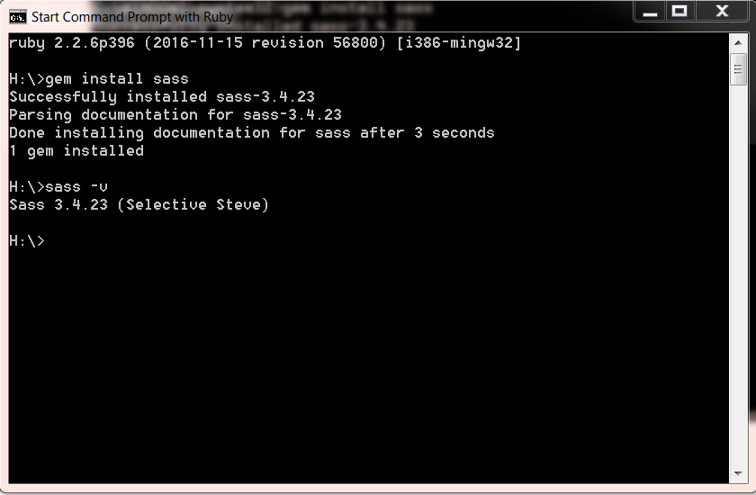

Yayınlanma Saati: 16:29
sass scss css css-preprocessorHerkese merhaba, Neredeyse her yazıma uzun zamandır yazamıyorum diye başlamak zorunda kalıyorum :) Ama bundan sonra düzenli olarak bildiklerimi sizlerle paylaşmaya çalışacağım. Bugün CSS-preprocessor’lerden SASS ve SCSS hakkında bilgi vereceğim.
Preprocessor’ün Türkçe karşılığı Ön-derleyeci‘dir. Önderleyiciler bize programlama dillerinde olduğu gibi CSS yazarken de fonksiyon oluşturma, değişken tanımlama, operatörleri kullanma gibi olanaklar sağlıyor.
Şuanda popüler olan 3 adet önderleyici vardır. Bunlar SASS, LESS, ve Stylus‘dur. Bu yazımda SASS ve SCSS‘den bahsedeceğim.
SASS, 2006 yılında geliştirilmeye başlanan, Ruby diline yakın bir dille CSS yazmayı hedefleyen bir Ruby Gem’dir. 2008 yılına kadar Hampton Catlin tarafından geliştirilmiştir. Şu anda ise açık kaynak bir teknoloji olarak geliştirilmeye devam etmektedir.
Sürekli gelişen yazılım dünyasında CSS’in eski bir teknoloji olarak kalmasını beklemeyezdik. SASS sayesinde dinamik bir şekilde CSS yazmaya başladık ve sayfalarımıza javascript dahil etmeden ileri seviye animasyonlar yapmak SASS sayesinde daha kolay ve basit bir hale geldi.
SASS, Ruby benzeri bir syntax ile yazılır ve yazılan bu kodlar CSS’e dönüştürülür. Bu dönüştürme işlemi otomatik olarak yapılır ve projeye dahil edilir. Ekstra bir derleme komutu gerekmeden projenizdeki her “.sass” ve “.scss” uzantılı dosyayı derleyerek projenize dahil eder.
SASS bir uzantı dilidir. CSS ile yaptığımız işleri daha kolay, daha hızlı ve daha okunabilir bir şekilde yazmamızı sağlayan bir teknolojidir.
SCSS, SASS’ın syntax olarak CSS’e daha çok benzeyen halidir.
SASS yazarken parantez işaretleri ve noktalı virgül kullanılmadığı için CSS yazmaya alışan geliştiriciler SASS yazarken zorlanıyordu. Bu sebeple SCSS ile parantezler ve noktalı virgül kullanımı geri geldi. Syntax biraz daha CSS’e benzedi.
Neden SCSS kullanmanız gerektiğini diğer yazılarda göstereceğim örneklerle daha rahat anlayacaksınız ama şimdilik size SCSS‘in bir kaç müthiş özelliğinden bahsedeyim.
SASS ve SCSS kurulumunu ayrı ayrı yapmıyoruz. Yukarıda belirttiğim gibi ikiside aynı çatı altında çalışıyor, sadece syntax farkı var. Aşağıdaki kurulum ikisi içinde geçerlidir.
Bilgisayarınıza kurabilmek için iki seçeneğimiz var. Birincisi yardımcı masaüstü programlar ile, ikinci yol ise komut satırından kurulum. Ben size komut satırından kurulumu anlatacağım.
SASS ve SCSS ile çalışabilmek için bilgisayarımızda Ruby’nin kurulu olması gerekiyor. Buradan, işletim sisteminize uygun olan sürümü seçerek indirip, kurulumu gerçekleştirebilirsiniz.
Ruby’i bilgisayarımıza kurduktan sonra masaüstüne gelip, Windows + R tuşlarına basıyoruz ve açılan ekrandaki alana cmd yazıp komut satırını başlatıyoruz.
Komut satırına aşağıdaki komutu yazarak sass kurulumunu gerçekleştiriyoruz.
gem install sass // sass kurulumunu gerçekleştiriyoruz.Kurulum tamamlandıktan sonra aşağıdaki gibi bir mesaj alacaksınız.

Kurulumun gerçekleştiğini kontrol etmek için aşağıdaki komutu yazın ve sonuç olarak bilgisayarınızda kurulu olan sass versiyonunu size döndürüyorsa eksiksiz bir şekilde kurulum tamamlanmış demektir.
sass -v // sass versiyonunu ekrana yazdırıyoruz.Temiz ve okunaklı bir kod yapısının önemini anlatmaya gerek yok. Projeler büyüdükçe CSS dosyları içinden çıkılamayacak bir hal alıyor ve salt CSS ile bu stil dosyalarını temiz ve okunaklı bir şekilde yazmak oldukça güçleşiyor. İşte tam burada devreye CSS preporecessor‘ler giriyor. SCSS kullanmamın sebebi ise syntax’ının oldukça CSS’e benzemesi ve bir çok kaynağın bulunması.
SCSS yazarken dikkatli bir şekilde yazmazsınız bir süre sonra normal CSS’den farkı kalmayacaktır. Buda CSS preporecessor kullanmanın bir anlamı kalmaması demektir. O yüzden dikkatli ve temiz bir şekilde kodlama yapmanız gerekiyor.
Birdahaki yazımda SASS ve SCSS ayarları nasıl yapılır ondan bahsedeceğim. Yararlı olabildiysem ne mutlu bana. İyi çalışmalar, iyi günler…